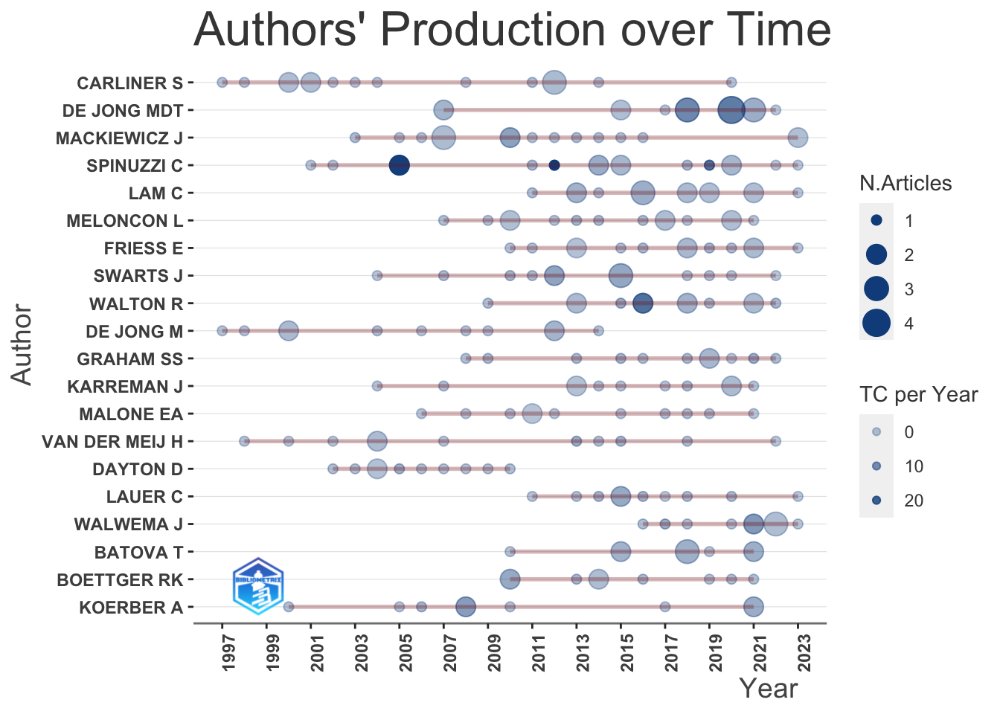

Wk 09: Network Analysis
Overview: Network Analysis
Web of Science Queries (articles only)
- Technical Communication Quarterly
- IEEE Transactions on Professional Communication
- Journal of Business and Technical Communication
- Technical Communication
Other resources:
Key library: Bibliometrix
To use biblioshiny (Graphical interface built with RShiny)
Code
#library(bibliometrix)
#biblioshiny()Convert .bib to dataframes
Set file locations
Code
tcq <- "data/wos-tcq.bib"
ieee <- "data/wos-ieee.bib"
jbtc <- "data/wos-jbtc.bib"
tc <- "data/wos-tc.bib"Convert each bib file to a dataframe
Code
#help(convert2df)
# TCQ
df_tcq <- convert2df(file = tcq,
dbsource = "wos",
format = "bibtex")
Converting your wos collection into a bibliographic dataframe
Warning:
In your file, some mandatory metadata are missing. Bibliometrix functions may not work properly!
Please, take a look at the vignettes:
- 'Data Importing and Converting' (https://www.bibliometrix.org/vignettes/Data-Importing-and-Converting.html)
- 'A brief introduction to bibliometrix' (https://www.bibliometrix.org/vignettes/Introduction_to_bibliometrix.html)
Missing fields: C1
Done!Code
# IEEE
df_ieee <- convert2df(file = ieee,
dbsource = "wos",
format = "bibtex")
Converting your wos collection into a bibliographic dataframe
Warning:
In your file, some mandatory metadata are missing. Bibliometrix functions may not work properly!
Please, take a look at the vignettes:
- 'Data Importing and Converting' (https://www.bibliometrix.org/vignettes/Data-Importing-and-Converting.html)
- 'A brief introduction to bibliometrix' (https://www.bibliometrix.org/vignettes/Introduction_to_bibliometrix.html)
Missing fields: C1
Done!Code
# JBTC
df_jbtc <- convert2df(file = jbtc,
dbsource = "wos",
format = "bibtex")
Converting your wos collection into a bibliographic dataframe
Warning:
In your file, some mandatory metadata are missing. Bibliometrix functions may not work properly!
Please, take a look at the vignettes:
- 'Data Importing and Converting' (https://www.bibliometrix.org/vignettes/Data-Importing-and-Converting.html)
- 'A brief introduction to bibliometrix' (https://www.bibliometrix.org/vignettes/Introduction_to_bibliometrix.html)
Missing fields: C1
Done!Code
# TC
df_tc <- convert2df(file = tc,
dbsource = "wos",
format = "bibtex")
Converting your wos collection into a bibliographic dataframe
Warning:
In your file, some mandatory metadata are missing. Bibliometrix functions may not work properly!
Please, take a look at the vignettes:
- 'Data Importing and Converting' (https://www.bibliometrix.org/vignettes/Data-Importing-and-Converting.html)
- 'A brief introduction to bibliometrix' (https://www.bibliometrix.org/vignettes/Introduction_to_bibliometrix.html)
Missing fields: C1
Done!Combine the resulting dataframes
Code
# run a stock analysis (generates a list of dataframes)
results <- biblioAnalysis(M, sep = ";")
# create a summary of the results
options(width=100)
S <- summary(object = results, k = 10, pause = FALSE)
MAIN INFORMATION ABOUT DATA
Timespan 1994 : 2023
Sources (Journals, Books, etc) 4
Documents 1866
Annual Growth Rate % 8.76
Document Average Age 11.8
Average citations per doc 12.12
Average citations per year per doc 1.022
References 52452
DOCUMENT TYPES
article 1826
article; early access 30
article; proceedings paper 10
DOCUMENT CONTENTS
Keywords Plus (ID) 1476
Author's Keywords (DE) 4048
AUTHORS
Authors 2201
Author Appearances 3370
Authors of single-authored docs 654
AUTHORS COLLABORATION
Single-authored docs 970
Documents per Author 0.848
Co-Authors per Doc 1.81
International co-authorships % 0
Annual Scientific Production
Year Articles
1994 7
1995 20
1996 17
1997 40
1998 42
1999 42
2000 51
2001 52
2002 40
2003 52
2004 46
2005 84
2006 63
2007 82
2008 76
2009 72
2010 80
2011 65
2012 72
2013 66
2014 60
2015 67
2016 73
2017 75
2018 81
2019 83
2020 80
2021 109
2022 89
2023 80
Annual Percentage Growth Rate 8.76
Most Productive Authors
Authors Articles Authors Articles Fractionalized
1 CARLINER S 16 CARLINER S 13.42
2 DE JONG MDT 16 MACKIEWICZ J 13.03
3 MACKIEWICZ J 16 SWARTS J 12.00
4 SPINUZZI C 16 FRIESS E 10.50
5 LAM C 14 LAM C 10.50
6 MELONCON L 14 SPINUZZI C 9.50
7 FRIESS E 13 MELONCON L 8.67
8 SWARTS J 13 BATOVA T 8.00
9 WALTON R 12 MALONE EA 7.50
10 DE JONG M 11 VAN DER MEIJ H 7.50
Top manuscripts per citations
Paper DOI TC TCperYear NTC
1 LOWRY PB, 2014, IEEE Trans. Prof. Commun. 10.1109/TPC.2014.2312452 964 96.40 33.18
2 SPINUZZI C, 2005, Tech. Commun. NA 502 26.42 18.49
3 SPINUZZI C, 2012, J. Bus. Tech. Commun. 10.1177/1050651912444070 339 28.25 16.72
4 BOREN MT, 2000, IEEE Trans. Prof. Commun. 10.1109/47.867942 325 13.54 13.55
5 KOCK N, 2005, IEEE Trans. Prof. Commun. 10.1109/TPC.2005.849649 227 11.95 8.36
6 ROBERT LP, 2005, IEEE Trans. Prof. Commun. 10.1109/TPC.2004.843292 154 8.11 5.67
7 RUPPEL CP, 2001, IEEE Trans. Prof. Commun. 10.1109/47.911131 147 6.39 6.41
8 HAAS AM, 2012, J. Bus. Tech. Commun. 10.1177/1050651912439539 128 10.67 6.31
9 ROBEY D, 2000, Tech. Commun. 10.1109/47.826416 126 5.25 5.25
10 JONES NN, 2016, Tech. Commun. Q.-a 10.1080/10572252.2016.1224655 125 15.62 10.14
Most Relevant Sources
Sources Articles
1 TECHNICAL COMMUNICATION 545
2 JOURNAL OF BUSINESS AND TECHNICAL COMMUNICATION 460
3 IEEE TRANSACTIONS ON PROFESSIONAL COMMUNICATION 454
4 TECHNICAL COMMUNICATION QUARTERLY 407
Most Relevant Keywords
Author Keywords (DE) Articles Keywords-Plus (ID) Articles
1 COMMUNICATION 113 COMMUNICATION 165
2 TECHNICAL COMMUNICATION 83 TECHNICAL COMMUNICATION 94
3 COLLABORATION 59 TECHNOLOGY 81
4 PEDAGOGY 52 GENRE 68
5 USABILITY 50 INFORMATION 65
6 ETHICS 49 DESIGN 61
7 WRITING 47 WORK 58
8 RHETORIC 45 PERFORMANCE 56
9 SOCIAL MEDIA 42 MODEL 52
10 SOCIAL JUSTICE 39 DISCOURSE 42Plot results
Citation analysis
Most cited articles
Code
[,1]
ANONYMOUS, TECHNICAL COMMUNICAT 209
MILLER CR, 1984, Q J SPEECH, V70, P151, DOI 10.1080/00335638409383686 118
MILLER CR, 1979, COLL ENGL, V40, P610, DOI 10.2307/375964 85
JONES NN, 2016, TECH COMMUN Q, V25, P211, DOI 10.1080/10572252.2016.1224655 80
JONES N. N., 2016, J TECH WRIT COMMUN, V46, P342, DOI DOI 10.1177/0047281616639472 69
RUSSELL DR, 1997, WRIT COMMUN, V14, P504, DOI 10.1177/0741088397014004004 66
AGBOKA GY, 2013, TECH COMMUN Q, V22, P28, DOI 10.1080/10572252.2013.730966 62
SWALES J, 1990, GENRE ANAL ENGLISH A 62
HAAS AM, 2012, J BUS TECH COMMUN, V26, P277, DOI 10.1177/1050651912439539 61
ANONYMOUS, 1996, TECH COMMUN Q 57
RUDE CD, 2009, J BUS TECH COMMUN, V23, P174, DOI 10.1177/1050651908329562 56
BAZERMAN CHARLES, 1988, SHAPING WRITTEN KNOW 53
SPINUZZI C., 2003, TRACING GENRES ORG S 53
BERKENKOTTER C., 1995, GENRE KNOWLEDGE DISC 52
KATZ SB, 1992, COLL ENGL, V54, P255, DOI 10.2307/378062 52
SCHRIVER KA., 1997, DYNAMICS DOCUMENT DE 49
ANONYMOUS, 1998, TECH COMMUN Q, DOI 10.1080/10572259809364640, DOI 10.1080/10572259809364640 48
AGBOKA G. Y., 2014, J TECHNICAL WRITING, V44, P297 44
DAFT RL, 1986, MANAGE SCI, V32, P554, DOI 10.1287/MNSC.32.5.554 42
DRAGGA S, 2001, TECH COMMUN, V48, P265 42
JOHNSON R. R., 1998, USER CTR TECHNOLOGY 42
MILES M. B., 1994, QUALITATIVE DATA ANA 42
ANONYMOUS, NO TITLE CAPTURED 41
HOFT NANCY L, 1995, INT TECHNICAL COMMUN 41
RAINEY KT, 2005, TECH COMMUN-STC, V52, P323 41
ANONYMOUS, 2000, SPURIOUS COIN HIST S 39
KIMBALL MA, 2006, TECH COMMUN Q, V15, P67, DOI 10.1207/S15427625TCQ1501\\_6 38
SPINUZZI C, 2007, TECH COMMUN Q, V16, P265, DOI 10.1080/10572250701290998 38
HOFSTEDE G., 2001, CULTURES CONSEQUENCE 37
SLACK JENNIFER DARYLL, 1993, J BUS TECH COMMUN, V7, P12, DOI 10.1177/1050651993007001002 37
ANONYMOUS, 2004, TECH COMMUN Q 36
ANONYMOUS, J TECHNICAL WRITING 36
WALTON R., 2019, TECHNICAL COMMUNICAT 36
ANONYMOUS, INTERCOM 34
JONES NN, 2018, KEY THEORETICAL FRAMEWORKS: TEACHING TECHNICAL COMMUNICATION IN THE TWENTY-FIRST CENTURY, P241, DOI 10.7330/9781607327585.C010 34
SALDA├A┬▒A J., 2016, CODING MANUAL QUALIT 34
SUN HT, 2006, TECH COMMUN Q, V15, P457, DOI 10.1207/S15427625TCQ1504\\_3 33
FARKAS DK, 1999, TECH COMMUN, V46, P42 32
ANONYMOUS, J BUSINESS COMMUNICA 31
DURACK K. T., 1997, TECH COMMUN Q, V6, P249 31
SPINUZZI C., 2008, NETWORK THEORIZING K 31
YATES J, 1992, ACAD MANAGE REV, V17, P299, DOI 10.2307/258774 31
MISTRY ROHINTON, 2002, FAMILY MATTERS 30
PARETTI MC, 2007, TECH COMMUN Q, V16, P327, DOI 10.1080/10572250701291087 29
ANONYMOUS, 2007, COMMUNICATIVE PRACTI 28
ANONYMOUS, PROFESSIONAL COMMUNI 28
BRUMBERGER E, 2015, TECH COMMUN-STC, V62, P224 28
DAFT RL, 1987, MIS QUART, V11, P355, DOI 10.2307/248682 28
KOERBER A, 2006, TECH COMMUN Q, V15, P87, DOI 10.1207/S15427625TCQ1501\\_7 28
SCHRIVER K, 1997, DYNAMICS DOCUMENT DE 28Most cited first authors
[,1]
ANONYMOUS 7766
SPINUZZI C 405
MILLER CR 244
NO TITLE CAPTURED 223
JONES NN 191
WALTON R 171
CARLINER S 161
HOFSTEDE G 143
DRAGGA S 126
WINSOR DA 123
LATOUR B 119
KOSTELNICK C 118
MELONCON L 116
BERKENKOTTER C 114
NIELSEN J 111
FREEDMAN A 109
JONES N N 108
BAZERMAN CHARLES 107
VAN DER MEIJ H 107
MACKIEWICZ J 102
SWARTS J 102
HAAS AM 101
MIREL B 93
TEBEAUX E 92
KIMBALL MA 90Local citations
Not working :(
Code
CR <- localCitations(M, sep = ";")
CR$Authors[1:10, ] Author LocalCitations
1 [ANONYMOUS] A 0
2 ABBOTT C 0
3 ABBOTT L 0
4 ABELL J 0
5 ACHARYA KR 0
6 ACKERMAN M 0
7 ADA S 0
8 ADAM C 0
9 ADAMS A 0
10 ADAMS AH 0Not working :(
Code
CR$Papers[1:10,] Paper DOI Year LCS GCS
1 HOPKINS WE, 1994, J. Bus. Tech. Commun. 10.1177/1050651994008003005 1994 0 0
2 ZAK MW, 1994, J. Bus. Tech. Commun. 10.1177/1050651994008003002 1994 0 7
3 NICHOLSON JD, 1994, J. Bus. Tech. Commun. 10.1177/1050651994008003006 1994 0 0
4 LIMAYE MR, 1994, J. Bus. Tech. Commun. 10.1177/1050651994008003007 1994 0 3
5 GRIFFETH RW, 1994, J. Bus. Tech. Commun. 10.1177/1050651994008003003 1994 0 3
6 KOSSEK EE, 1994, J. Bus. Tech. Commun. 10.1177/1050651994008003004 1994 0 12
7 LIMAYE MR, 1994, J. Bus. Tech. Commun.-a 10.1177/1050651994008003001 1994 0 0
8 THOMAS SG, 1995, J. Bus. Tech. Commun. 10.1177/1050651995009004004 1995 0 5
9 GOLEN SP, 1995, J. Bus. Tech. Commun. 10.1177/1050651995009003003 1995 0 0
10 MIREL B, 1995, J. Bus. Tech. Commun. 10.1177/1050651995009003001 1995 0 6Code
DF <- dominance(results, k = 12)
DF Author Dominance Factor Tot Articles Single-Authored Multi-Authored First-Authored Rank by Articles Rank by DF
1 MACKIEWICZ J 0.6000000 16 11 5 3 1 1
2 FRIESS E 0.6000000 13 8 5 3 7 1
3 SPINUZZI C 0.5555556 16 7 9 5 1 3
4 GRAHAM SS 0.5555556 11 2 9 5 9 3
5 CARLINER S 0.5000000 16 12 4 2 1 5
6 MELONCON L 0.4444444 14 5 9 4 5 6
7 WALTON R 0.4000000 12 2 10 4 8 7
8 DE JONG M 0.3636364 11 0 11 4 9 8
9 MALONE EA 0.3333333 11 5 6 2 9 9
10 LAM C 0.2857143 14 7 7 2 5 10
11 DE JONG MDT 0.2500000 16 0 16 4 1 11
12 KARREMAN J 0.1818182 11 0 11 2 9 12Code
topAU <- authorProdOverTime(M, k = 20, graph = TRUE)
Code
head(topAU$dfAU) Author year freq TC TCpY
1 BATOVA T 2010 1 11 0.7857143
2 BATOVA T 2015 2 34 3.7777778
3 BATOVA T 2018 3 25 4.1666667
4 BATOVA T 2019 1 1 0.2000000
5 BATOVA T 2021 2 13 4.3333333
6 BOETTGER RK 2010 2 77 5.5000000Co-Citation
Code
NetMatrix <- biblioNetwork(M, analysis = "co-citation", network = "references", sep = ";")
## Plot the network
net=networkPlot(NetMatrix,
n = 25,
Title = "Co-Citation Network",
type = "fruchterman",
size=T,
label.cex=TRUE,
label.color=TRUE,
halo=FALSE,
remove.multiple=FALSE,
labelsize=.7,
edgesize = 3,
cluster = "none",
community.repulsion = .3,
edges.min = 1)